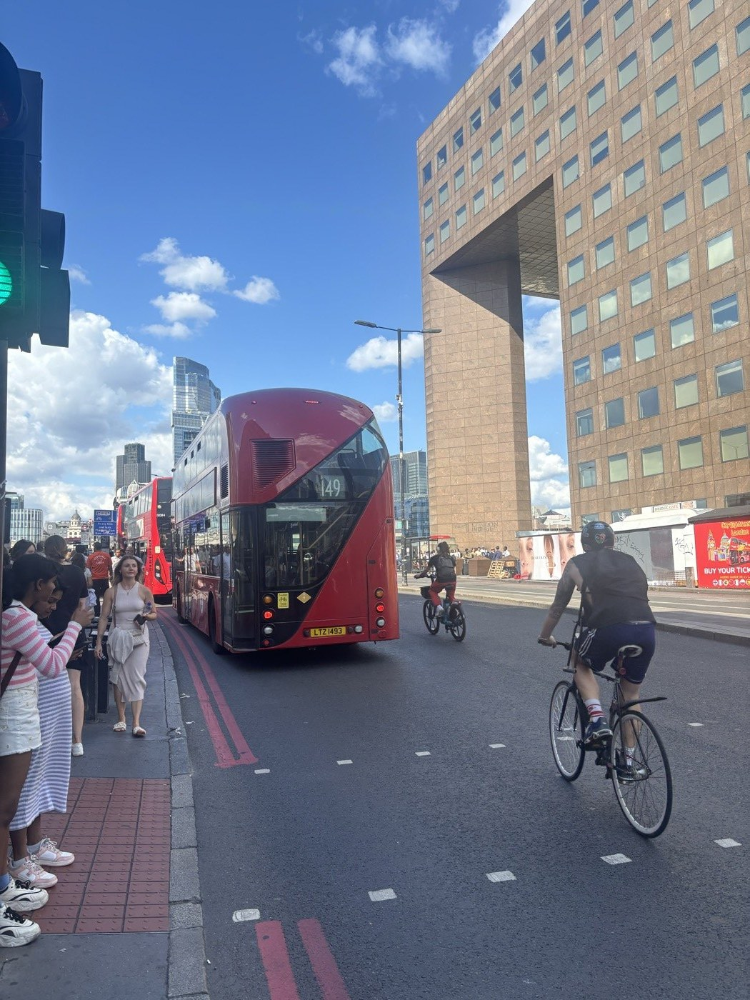

Conversa desde o começo
Pratique perguntas, respostas e situações do cotidiano, com espaço para tentar de novo e desenvolver confiança.
CONVERSAÇÃO & CULTURA
Aulas com foco em conversação, pronúncia britânica e situações reais — para transformar o que você aprende em confiança para se comunicar.
Explore os detalhesAULAS REMOTAS · INGLÊS BRITÂNICO · CULTURA

ENGLISH IN REAL LIFE
Uma proposta inspirada na experiência de Breno com conversação desde o início, em situações que podem acontecer em uma viagem, numa mudança ou no cotidiano.
Pratique perguntas, respostas e situações do cotidiano, com espaço para tentar de novo e desenvolver confiança.
Explore sons, expressões e formas de falar que Breno conheceu ao viver na Inglaterra, reconhecendo que existem diferentes sotaques no país.
Entenda palavras e costumes dentro de situações reais: no café, no transporte ou numa conversa informal.
A proposta inclui conversar sobre seus pontos de atenção e o que praticar após as aulas.
ESCOLHA SEU RITMO
Um encontro para praticar, esclarecer dúvidas e trabalhar situações específicas.
Uma rotina de aulas para desenvolver sua conversação ao longo do tempo.
Uma opção em estudo para conversar com um britânico e conhecer outra voz e perspectiva cultural. Sujeita à disponibilidade.
PLANOS E VALORES
Os formatos, a duração e os valores das aulas estão em definição. Esta página será atualizada quando os pacotes estiverem prontos.
A experiência de progresso mostrada na home é ilustrativa; a área do aluno ainda é uma ideia para o futuro.
SEU PRÓXIMO PASSO
Conheça também os outros caminhos e escolha aquele que combina com seu momento.
Canal de contato e contratação em preparação.